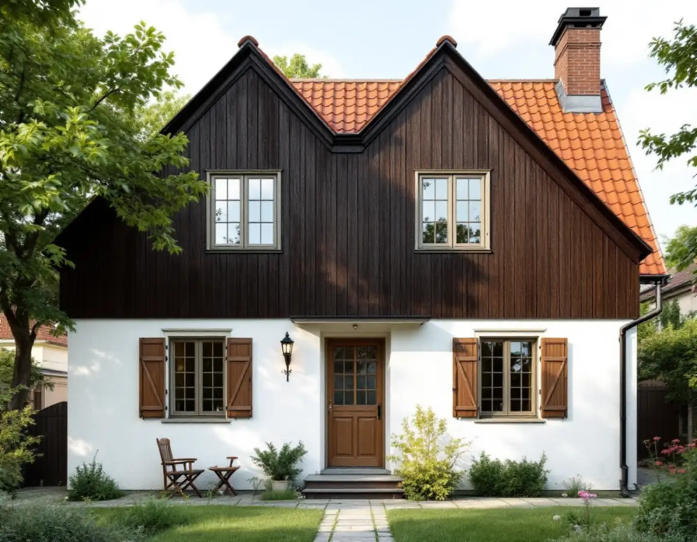
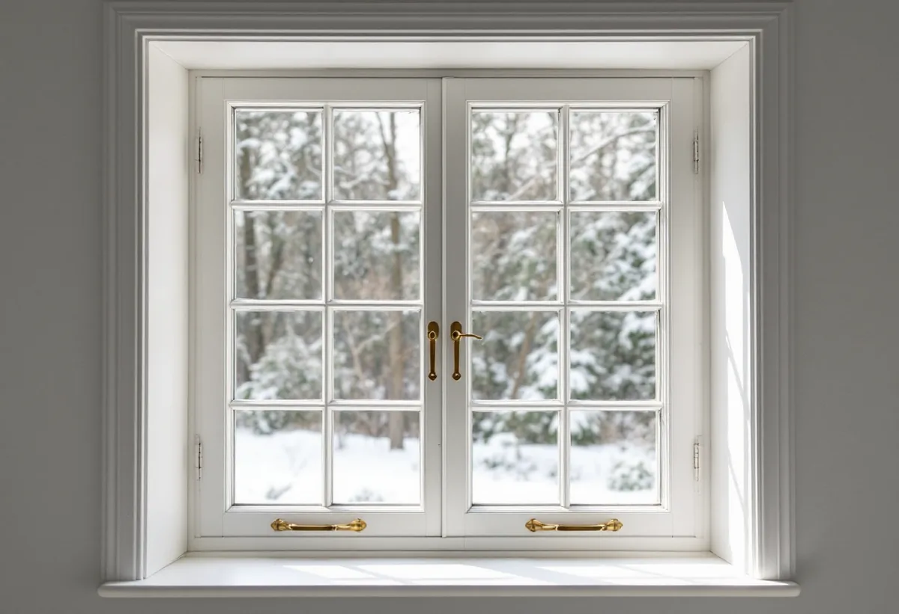
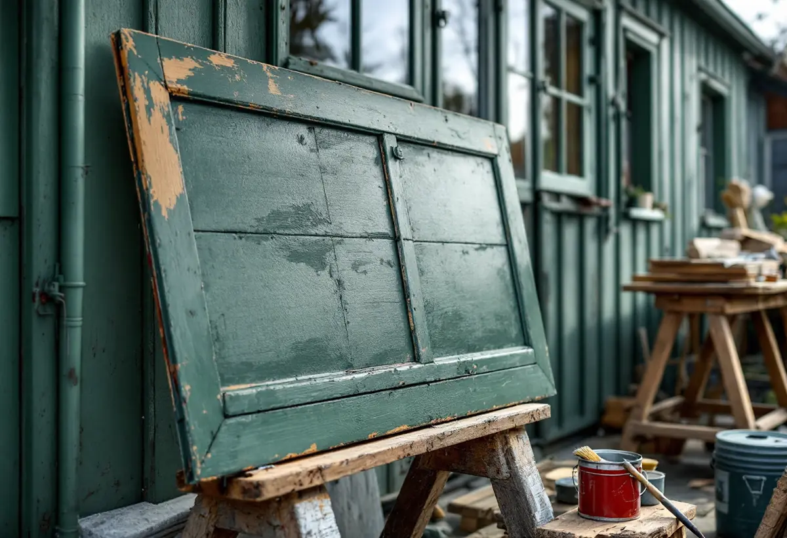

Inventering
Bågar, luckor, kitt och beslag besiktigas fönster för fönster.
Villorna i Älvsjö villastad byggdes på 1910-talet med småspröjsade fönster och ofta fönsterluckor, och många av dem finns kvar. Geal Entreprenad AB renoverar fönster i villor i Älvsjö, Långbro, Herrängen och Långsjö och tar hand om bågar, luckor och beslag i samma arbete.

Stadsmuseets inventering av Älvsjö villastad visar en ritning till en villa uppförd 1913–1914, som representerar en vanlig villatyp i Älvsjö i mitten av 1910-talet: slätputsad bottenvåning, gavelspetsar med panel på förvandring och småspröjsade fönster med luckor. En annan vanlig typ hade falurödfärgad träpanel och vitmålade snickerier.
Inventeringen berättar också att bolaget AB Hem på landet, som sålde tomterna, ville godkänna den yttre färgtonen för att undvika oharmoniska färger mellan grannhusen. Båda hustyperna finns enligt inventeringen kvar i nästan helt ursprungligt skick.

Riksantikvarieämbetet beskriver hur kopplade, inåtgående fönsterbågar blev allt vanligare från sekelskiftet. När de kopplade bågarna öppnas inåt utesluts mittposten, och den inre bågen blir den bärande som den yttre hänger på. Därför görs den inre bågen ofta kraftigare.
De äldre kopplade bågarna kan vara stora och tunga, med igengrodda kopplingsbeslag och skevheter, skriver Riksantikvarieämbetet. Vid en renovering lossar vi bågarna från varandra, rengör och justerar beslagen och kompletterar med nya handtag och stängningsbeslag där de gamla inte fungerar.
Fönsterluckorna sitter ute i väder året runt och har ofta samma skador som bågarna: släppt färg, sprickor och röta i nederkanten. Vi tar ner luckorna, lagar skadat trä, målar dem och sätter tillbaka dem med justerade gångjärn och hakar.
Riksantikvarieämbetet påpekar att lämpliga beslag av äldre typ kan vara svåra att få tag på och råder att inte kasta gamla fönsterbeslag. Hörnbeslag av äldre typ har stor betydelse för fönstrets styrka och karaktär och bör användas som de var tänkta. Vi rengör och återanvänder de beslag som går.
Eftersom Hem på landet ville godkänna villornas yttre färgton hörde fönstrens kulör till helheten redan från början. Vid en renovering skrapar vi fram äldre färglager på bågar och foder för att se vilken kulör fönstren haft, innan ny färg väljs.
Linoljefärg torkar genom att ta upp syre ur luften och fyller porer och ojämnheter bättre än andra färger, skriver Riksantikvarieämbetet. Den torkar långsamt, men när den åldras vittrar den på ett sätt som ger goda förutsättningar för nästa underhållsmålning.
I stadens strategi för småhusområden är delar av Älvsjö markerade som kulturhistoriskt värdefull miljö. Stockholms stad räknar upp ändringar av fönster som kan kräva bygglov, bland annat ny kulör, ändrade profiler och spröjsar och ändrad indelning, och i särskilt värdefulla områden krävs lov även för åtgärder som annars är lovfria.
En renovering som behåller mått, profiler, indelning och kulör är underhåll. Stadsmuseets klassificeringskarta ger en första bild av om ditt hus berörs. Om villastadens fasader och färgtoner kan du läsa under målare i Älvsjö.
Riksantikvarieämbetet beskriver rengöring med soda- eller ammoniaklösning och noggrann sköljning, och att lös färg och lös kitt skrapas bort. Ibland behöver all färg tas bort, till exempel om fönstret målats med olämplig färg eller om färgskiktet blivit för tjockt.
Därefter kittas falsarna med linoljekitt och fönstret målas med linoljefärg i tre strykningar. Med tätningslist på innerbågen blir fönstren också tätare. Om fönsterbyte i stort kan du läsa under fönsterbyte.

Bågar, luckor, kitt och beslag besiktigas fönster för fönster.
Varje fönster och lucka står för sig.
Bågar och luckor tas ner och märks för att komma tillbaka på rätt plats.
Skadat virke byts, kitt läggs om och beslagen rengörs och justeras.
Linoljefärg i grundning, mellan- och slutstrykning.
Bågar och luckor sätts tillbaka, justeras och tätas.
Skatteverket räknar reparation av fönster och målning av fönster på ett småhus som rotarbete. Att byta eller reparera fönsterbleck räknas också.
Avdraget är högst 30 procent av arbetskostnaden, högst 50 000 kronor per person och år och högst 75 000 kronor tillsammans med rutavdrag. Material och resor ger inget avdrag. Geal drar avdraget direkt på fakturan.
Antalet fönster och luckor, mängden spröjs, skadorna i virket, beslagens skick och om all färg behöver tas bort. Efter ett gratis platsbesök får du ett skriftligt kostnadsförslag.
Byta eller renovera fönster.
Fönsterbyte i Stockholm →Takbyte, takbesiktning och plåtarbeten.
Takläggare i Älvsjö →Långbro, Herrängen och Långsjö.
Takrenovering i Älvsjö →Villatomten, prickmarken och vattnet.
Attefallshus i Älvsjö →Villorna, träbjälklaget och golvvärmen.
Badrumsrenovering i Älvsjö →Byggrätt, gamla planer och planändring.
Byggföretag i Älvsjö →Villastad, nya grannhus och puts på trä.
Fasadrenovering i Älvsjö →Fönster och tilläggsisolering.
Fönsterbyte i Älvsjö →Golvvärme under trägolv i äldre villor.
Golvläggare i Älvsjö →Slipa och ge golvet en ny kulör.
Golvslipning i Älvsjö →Villastad, flerlägenhetsvillor och kök i lager.
Köksrenovering i Älvsjö →Villastad, egnahem och småstugor i Älvsjö.
Målare i Älvsjö →Plåttak för solceller, kupor och verandor i Älvsjö.
Plåtslagare i Älvsjö →Staket, grind och plank i villastaden.
Snickare i Älvsjö →Vinden, kupan och byggrätten.
Takbyte i Älvsjö →Bårder och dekor i villastaden.
Tapetsering i Älvsjö →Byggrätt, trädgårdssida och volym.
Tillbyggnad i Älvsjö →